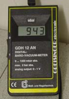

Digital Vacuum Meterby UemuraThis time uemura wants to disclose a value-for-money piece of equipment for vacuum distillations. All bees want to know the actual pressure when they distill something in vacuum. Classical measurement devices are the old mercury filled manometers, sometimes beautifully made in wood and glass. To get to the few centigram Hg, or just to expose the old-fashioned measurement device in your living room as a piece of craftsmann ship, or to bee on the safe side not to use mercury in your bee lab, you may think of buying state-of-the-art electronic manometers. Having a check in your standard provider's catalogue, you start to recognize: these things are expensive. Uemura's cheapest entry was about 420$ (NOTE: there is of course the possibility of finding something cheaper all around the world, but this was Uemura's finding). Now the good news: there is one for about 140$. Bad news: only for Euro-Bees. Enclosed is a picture of a fully working and controllable vacuum distillation apparatus, made of a oil pump, a Wolf'sche bottle, a needle valve to control the pressue AND the new digital manometer. Prior to taking the new device into operation, a comparison with Uemura's wooden, beautiful and very old mercury manometer has been made. The pressure measurements agree very well within 1-2 mbar in the range between 5 and 40mbar. Lower than 5 mbar, the electronic device displays less pressure (e.g. 0 mbar where the mercury one still had 2 mbar - which is around the min pressure Uemuras pump makes), above 40mbar the electronic sensor also gives less pressure than the mercury based one (e.g. electronic 52/88 mercury 66/110 mbar, which may also bee based on the different units torr and mbar, Uemura isn't a physicist, so tell him why this happens [Addendum by Rhodium: Multiply the mbar reading with 1.33 to get the reading in torr/mmHg]. At least in the range of (destillation) interest (5 to 30mbar) both agree well and should provide realiable measurements. Functions of the needle valve:
Functions of the one-way-valve: The one-way-valve is used to protect the sensor from the apparatus in case you expect corrosive gases during destillation. It allows you further to measure the pressure on a case by case need. Oil pump A water aspirator (or compressor) may of course be connected to the Wolf'sche bottle instead of an oil pump. The end vaccuum is just not that low and not that constant. Tubes Always use vaccuum tubes, not normal rubber tubes. They simple collapse.  Click on the pictures to view a larger version of the images. |